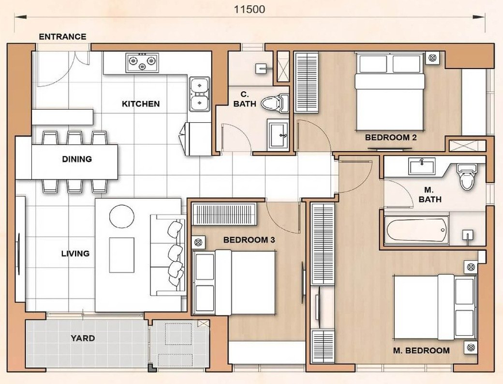
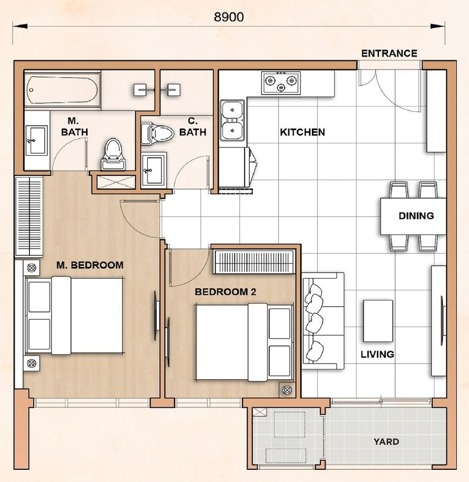
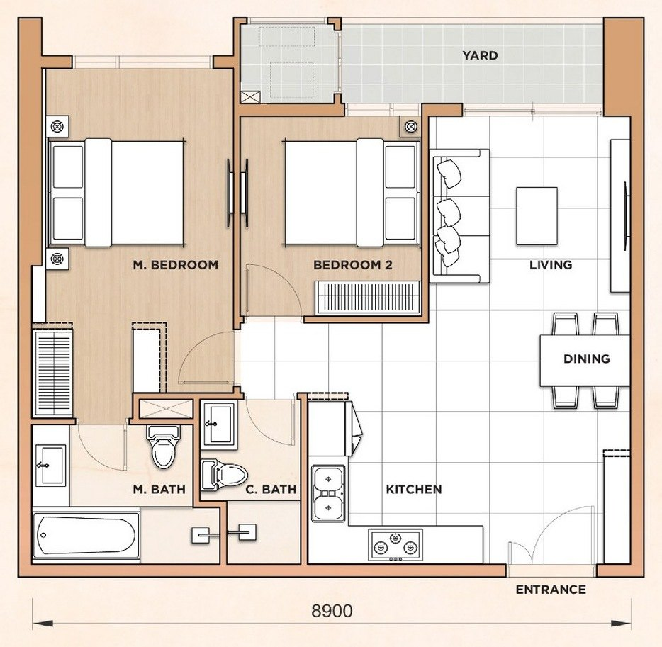
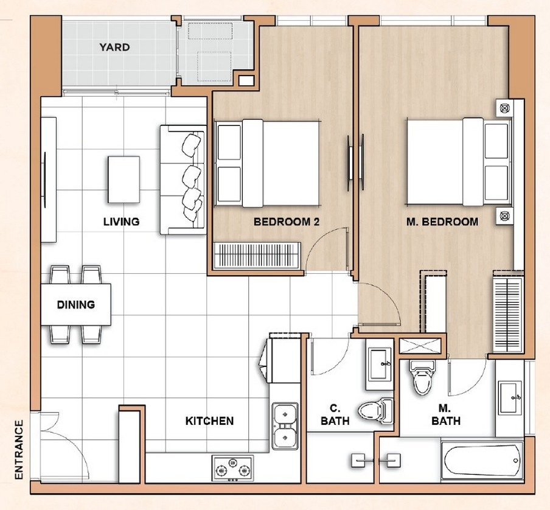
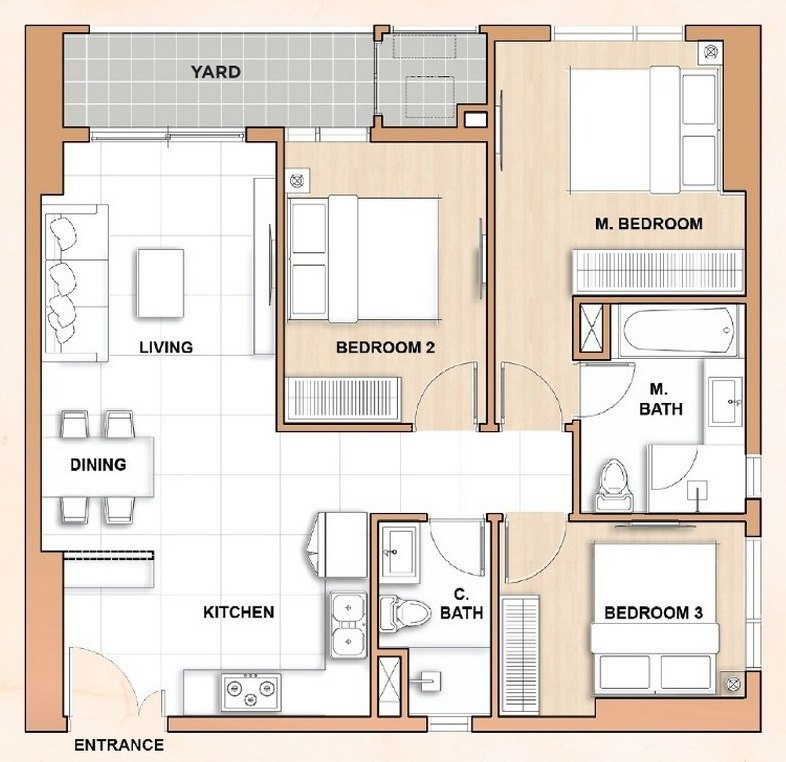
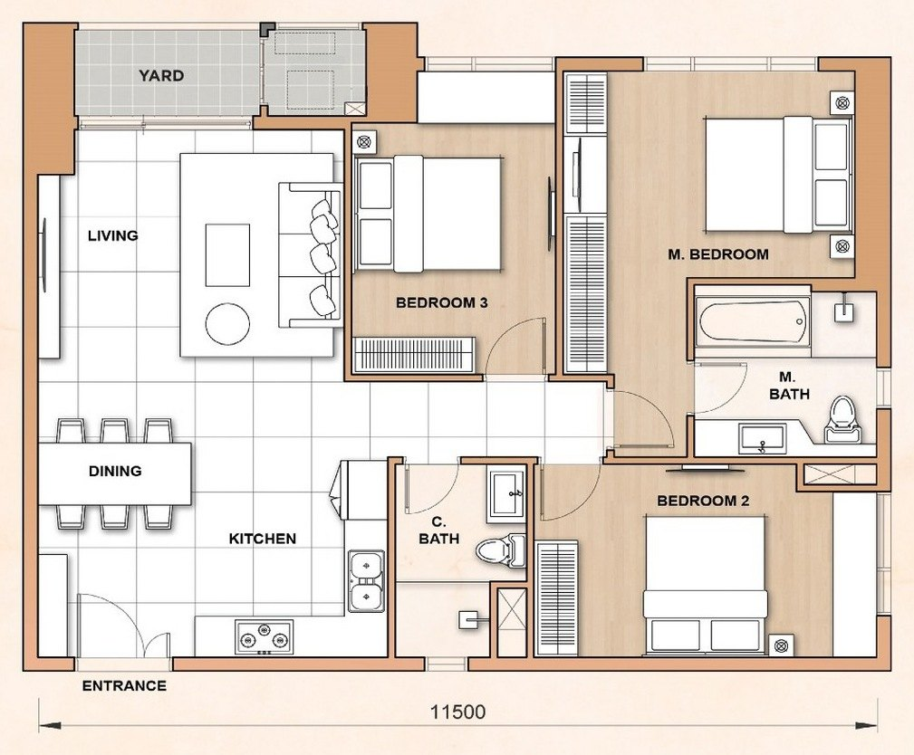
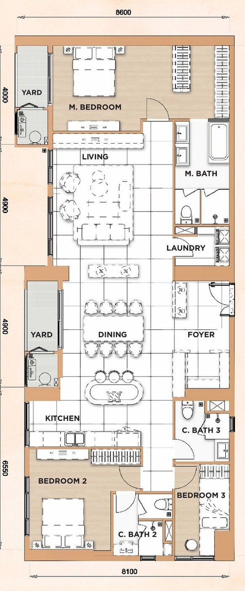

The Grand Manhattan (Quận 1): thông tin dự án và 7 mặt bằng căn hộ
1. Tóm tắt nhanh
Cô Giang – Cô Bắc
đã thu thập
khác nhau rõ rệt
The Grand Manhattan là dự án căn hộ hạng sang của Novaland trên đường Cô Giang – Cô Bắc, phường Cầu Ông Lãnh, Quận 1. Dự án có lịch sử pháp lý kéo dài và đang mở bán lại các căn còn lại. Tài liệu dự án công bố 7 mặt bằng căn hộ.
| Hạng mục | Thông tin |
|---|---|
| Tên dự án | The Grand Manhattan |
| Chủ đầu tư | Novaland |
| Địa chỉ | Đường Cô Giang – Cô Bắc, phường Cầu Ông Lãnh, Quận 1 |
| Mở bán lại | Novaland công bố mở bán lại các căn còn lại với giá khoảng 350 triệu/m² (chưa VAT) |
| Giá tham khảo | Từ khoảng 140 triệu/m² (2019) đến khoảng 350 triệu/m² (mở bán lại) |
| Giá bán chính thức | Chưa có bảng giá chính thức trong bài; xem mục 5 |
2. Vị trí
Dự án nằm tại Cô Giang – Cô Bắc, Quận 1. Bài chỉ nêu thông tin công bố, không đánh giá vị trí.
3. Sản phẩm
Bảng dưới đây liệt kê toàn bộ mặt bằng đã thu thập; những mẫu có diện tích gần như trùng nhau được ghi chú “cùng mặt bằng”, và phần hình chỉ đặt các mặt bằng khác nhau. Diện tích có thể khác nhau tùy nguồn (tim tường hay thông thủy); cột trống nghĩa là tài liệu không công bố.
| Loại / mã | Số PN | Tim tường (m²) | Thông thủy (m²) | Ghi chú |
|---|---|---|---|---|
| Tháp A1 Căn 02 (3PN+2WC, 8~37층) | 3 | – | 88,7 | |
| Tháp A1 Căn 01 (2PN+2WC) | 2 | – | 68,4 | |
| Tháp A1 Căn 04 (2PN+2WC) | 2 | – | 71,7 | |
| Tháp A2 Căn 07 (2PN+2WC) | 2 | – | 80,2 | |
| Tháp A3 Căn 04 (3PN+2WC) | 3 | – | 81,5 | |
| Tháp A2 Căn 06 (3PN+2WC) | 3 | – | 97,0 | |
| Căn 10 tầng 08 Sky Villa Limited (3PN+3WC) | 3 | – | 160,0 |
Căn hộ 3 phòng ngủ

Căn hộ 2 phòng ngủ



Căn hộ 3 phòng ngủ



4. Tiện ích và thiết kế
Thông tin tiện ích chi tiết xem trang chính thức của dự án; bài này tập trung vào mặt bằng căn hộ.
5. Giá tham khảo (gần đúng)
| Nguồn / loại căn | Mức giá | Ghi chú |
|---|---|---|
| Mở bán năm 2019 | từ 140 triệu/m² | Theo batdongsan.com.vn |
| Giai đoạn 3 năm 2022 | 220 triệu/m² | |
| Mở bán lại (24hmoney, theleader) | khoảng 350 triệu/m² (chưa VAT) | Áp dụng cho căn còn lại |
| Giá rao thứ cấp | 210–230 triệu/m²; một trang tổng hợp 173–256 triệu/m² | Chưa VAT |
Giá rao thứ cấp quanh 210–230 triệu/m²; mức mở bán lại được công bố khoảng 350 triệu/m², chênh lệch lớn.
6. Tiến độ và nguồn cung
- Chưa có thông tin chính thức trong bài: số căn từng mẫu, bảng giá hiện hành và tiến độ chi tiết; hãy hỏi chủ đầu tư.
7. Kết luận
Bài tổng hợp các mặt bằng đã công bố của The Grand Manhattan để dễ đối chiếu. Khi cân nhắc một căn cụ thể, hãy xác nhận mã căn, diện tích tim tường và thông thủy và giá hiện hành với chủ đầu tư.